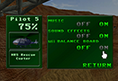

4 |
Preparación del mando |
 |


Nota: Si el cierre de tu correa tiene un seguro, bájalo hasta que oigas un clic. Así evitarás que se suelte la correa.
Sigue los pasos descritos a continuación para configurar el accesorio Wii Balance Board: Si el accesorio Wii Balance Board está sincronizado con tu consola Wii: 
Abra la pantalla "Options" (opciones) de "Copter Crisis" y seleccione "On".
Si el accesorio Wii Balance Board no está sincronizado con tu consola Wii: 
Cuando aparezca la pantalla de la derecha se muestra siga las instrucciones.
ADVERTENCIA:
|
 Asegúrate de que no haya objetos a tu alrededor ni por encima de ti, y sitúa el accesorio Wii Balance Board de tal forma que quede al menos un metro de distancia entre tu cuerpo (pies, manos, etc.) y las personas u objetos de la habitación, como el televisor.
Asegúrate de que no haya objetos a tu alrededor ni por encima de ti, y sitúa el accesorio Wii Balance Board de tal forma que quede al menos un metro de distancia entre tu cuerpo (pies, manos, etc.) y las personas u objetos de la habitación, como el televisor.


 |
 |
 |